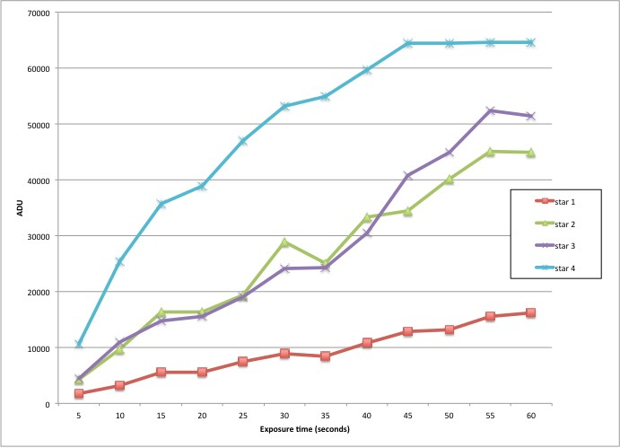
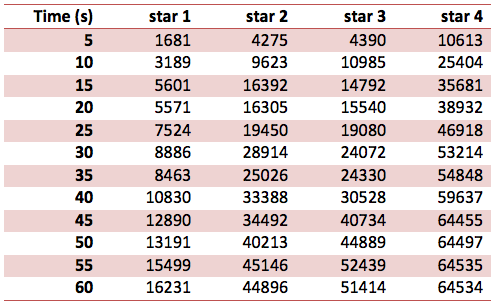

Testing the linearity of the KAF-16803 sensor (the anti-blooming version of Kodak's KAF-16801) seems to reveal a workable photometric range of up to 50% of the sensor's full well capacity and a 'comfortable' upper limit of 40,000 ADU.
The following test data comprises field stars that range significantly in brightness. Exposures at intervals of 5 seconds were acquired up to a maximum of 60 seconds

Figure 2: shows a plot of the ADU for the peak pixel of each star's image vs exposure length (click to enlarge).
Bright test stars, such as that used for star 4, are somewhat inconclusive due to the rate in which ADU increases even with modest exposure intervals. A repeat of this test using stars with brightness close to that of star 1 over an extended range of exposure may yield more reliable data.
However, there does appear to be a gradual onset of 'non-linearity' at around 40,000 - 50,000 ADU (star 2 & 4) and strong attenuation beyond 45,000 ADU (star 2 & 3). Of note is the strong linearity trend below 20,000 ADU (star 1) - making it a good candidate for extended testing.